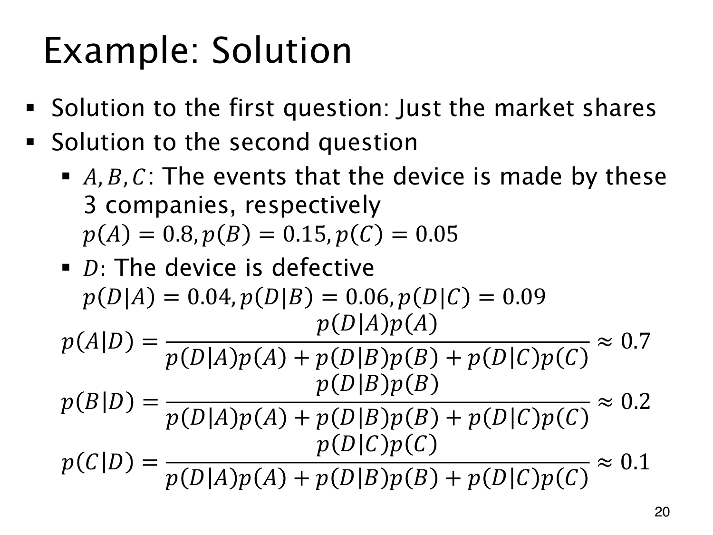

L1.10 · 第 20 页讲解原文
查看这一页课件

三个后验共用一个分母
未观察设备质量时，三家来源概率就是 p(A)=0.8、p(B)=0.15、p(C)=0.05。已知有缺陷 D，先算共同的证据概率：
p(D)=p(D∣A)p(A)+p(D∣B)p(B)+p(D∣C)p(C)=0.0455.
三个分子分别是 0.032、0.009、0.0045，除以这个相同分母后，
p(A∣D)=9164≈0.7033,p(B∣D)=9118≈0.1978,p(C∣D)=919≈0.0989.
课件写成约 0.7,0.2,0.1；精确分数相加恰为 1。
把模型放到 10000 台设备中理解，A、B、C 约有 8000、1500、500 台，分别产生约 320、90、45 台缺陷设备。观察到缺陷后，范围缩到这 455 台，来源比例便是 320/455,90/455,45/455。分母始终是同一批证据对象，分子把它们按来源分开。